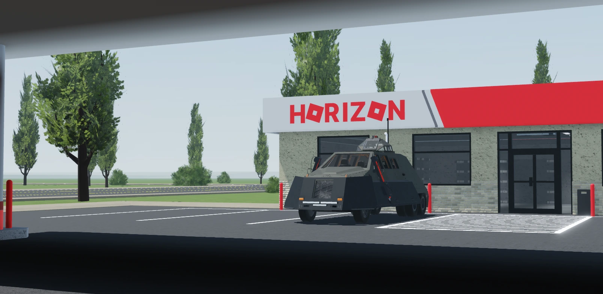
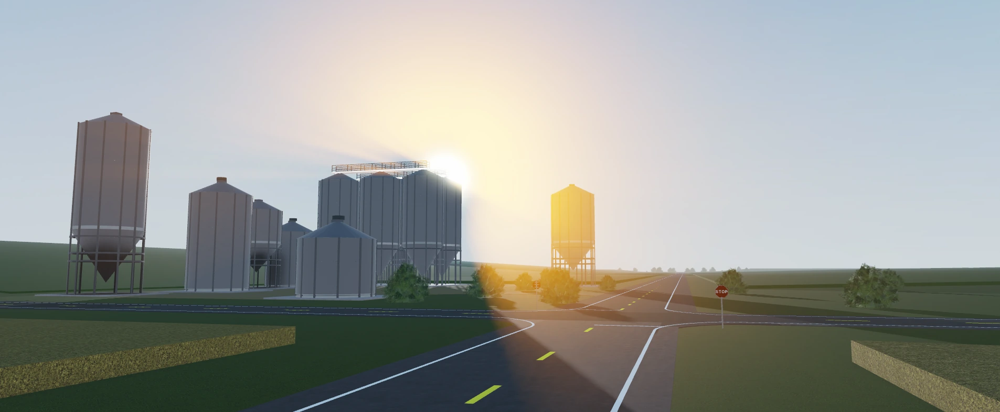
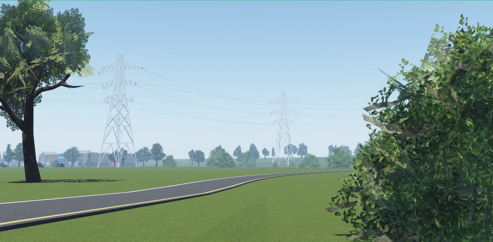
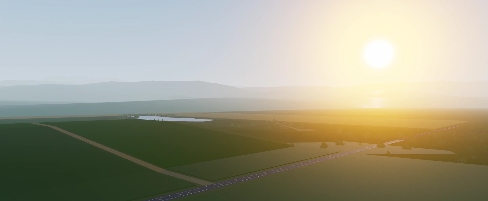
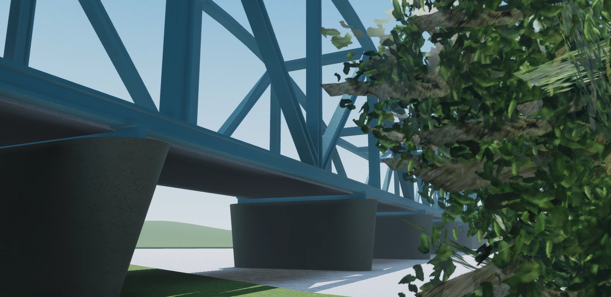

STORM
CHASING:REFLECTIVITY
Watch the sky change. Get drawn into the storm. Reflectivity is a storm-chasing experience on Roblox, built around realism and immersive weather.

THE CHASE.

HORIZON.
DEVELOPMENT SCREENSHOTS
BUILT FOR
THE CHASE.
A fascination with severe weather. A world shaped by atmosphere.
Welcome to Reflectivity.
- THE PLATFORM
- ROBLOX
- THE EXPERIENCE
- STORM CHASING
- THE FOCUS
- REALISM
- CURRENT STATUS
- IN DEVELOPMENT
STEP INTO THE STORM.
Discover the ideas at the heart of Reflectivity.
CHASE THE UNEXPECTED.
STORM
CHASING.
A changing sky. An unfolding storm. Reflectivity puts the fascination of chasing severe weather at the center of the experience.

FEEL THE ATMOSPHERE.
A SKY
IN MOTION.
The quiet before it builds. The scale as it grows. Immersive weather and dynamic storm environments make the atmosphere the main event.

WEATHER COMES FIRST.
ROOTED
IN REALISM.
Reflectivity is being developed with a focus on realism: bringing the scale, intensity, and presence of severe weather into the experience.

THE CHASE IS TAKING SHAPE.
Currently in development. Built around a shared interest in extreme weather.
IN DEVELOPMENT
Reflectivity is still being built. The experience, features, and visuals may evolve as development progresses.
BEFORE THE CHASE.
A few things to know about Reflectivity.
What is Reflectivity?
Reflectivity is a storm-chasing experience on the Roblox platform, focused on realism, immersive weather, and dynamic storm environments.
Which platform is it for?
Reflectivity is being developed on Roblox.
Is the game still in development?
Yes. Reflectivity is currently in development, so features and visuals may change as the project progresses.
How does community support work?
Support is available through the assistance channel in our Discord community. Check the community FAQ before opening a ticket, and read the server rules before participating.